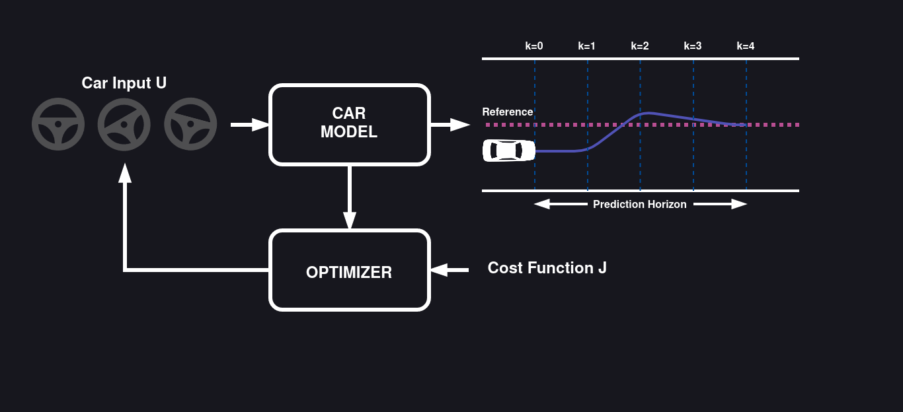
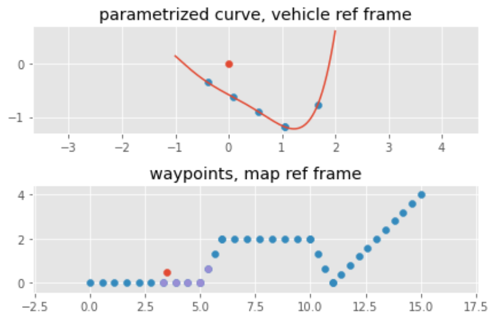

Model Predictive Control
For this project I got inspired by Udacity self-driving car nanodegree Model Predictive Control Project. This was an extremely interesting (and challenging) project to complete. I am going to discuss a bit the theorical details before discussing my implementation and showing the results.
What's MPC?
The goal of the controller is to calculate the input/s to a system such that a desired reference is followed by its output. A model predictive controller accomplishes this by predicting the behaviour of the system's output and using an optimizer to find the best possible sequence of inputs. The main adavantage of this approach is that it can control complex Multiple-Inputs Multiple-Outputs systems and can handle multiple constrains. To further explain MPC applied to self-driving cars in a simple (I hope) way, there is a scheme of the control loop wich I will discuss:
 Here MPC is used to keep the car's path (the system's output ) to the middle of the lane (the controller's reference) by commanding the steering sequence (the system's intput ). How it does that? At the current time, the MPC controller uses the car model to simulate the car’s path for the next T time steps (this is referred as the controller's prediction horizon ) if the steering wheel would be turned in a certain way.
To find the sequence that minimizes the distance of the predicted car's path from the center of the lane by performing many simulations and approaches the search of the best steering sequence as an optimization problem. The cost function J of this optimization problem hence penalizes paths with large overall error but can also pensalize sharp steering changes so to have a smooth driving, so the predicted path with the smallest J gives the optimal solution.
MPC applies only the first step of this optimal sequence to the car. Based on the applied steering wheel angle, the car will travel some distance and the MPC will get a new measurement of the car's position, this may be different than what was predicted due to unmeasured disturbances (slippery road, etc... ). At the next time step, the prediction horizon shifts forward and the controller repeats the same cycle of calculations to compute the optimal steering wheel angle for the next time step.
Kinematic Modelling

The MPC model is based on kinematic bicycle model defined by four state variables x = [x-position, y-position, velocity, heading] and two input variables u = [steering angle, acceleration].
The continuous model has been discretized according Euler's formula with a timestep dt. Altough it is a requirement of the optimization library that the system model should be linear, this is not the case due to trigonometric functions. So the linear system dynamics have been approximated using Taylor's series expansion, so that the state equations could be in the LTI form x_tplus = A*x_t + B*u_t
Optimization Problem
This is the actual cost function I used in the optimization problem. It consists of four terms in quadratic form:
- Crosstrack-error cte: longitudinal distance of the car's axle from the track.
- Heading-error psi: difference between the car heading the track direction.
- Velocity-error cte: difference between the car actual speed and the desired one.
- Actuaction effort u: amplitude of the input, this is usefull for minimizing the energy used.

The Weights Q, R, K and P are used to tune the response of the controller. Moreover, for the solution to be meaningful, the optimizer has to mantain several contraints:
- Starting condition of the car at that time.
- The predicted dynamics have to obey the Linear Model between time steps, this is how the optimzer actually "simulates".
- Maximum (and minimum) acceleration and steering angle have to be within those allowed by the car.
Track and Error Representation

One idea wich I quite liked in Udacity's implementation, is how the track is represented in the MPC. Normally the track is described by a set of waypoints (so a long list of x and y coordinates), this causes a couple of issues: calculationg the errors cte and psi is both inaccurate and compuyationally expensive!
Becouse of this, every time step only a small number of points ahead of the car is considered and they are to used to fit a polynomial curve in the form y = f(x), wich is used in the MPC step.
This is very useful for two reasons: the cte is now obtained directly by cte = f(x) , also, because tan(theta_track) = f'(x), psi is obtained by psi = theta-arctan(f'(x))
Implementation
Now we are done with math (phew...). The Controller was implemented in Python using CVXPY optimization library using the OSQP solver. It solves convex (hence why everything had to be in linear form) problems very efficiently, wich allows the controller to run in tral time with a dt of 200 milliseconds. This is what an optimization loop is implemented:
x = cp.Variable((N, T+1))
u = cp.Variable((M, T))
#CVXPY Linear MPC problem statement
cost = 0
constr = []
for t in range(T):
#cost += 1*cp.sum_squares(x[2,t]-1.0) # move car to
cost += 100*cp.sum_squares(x[3,t]-np.arctan(df(x_bar[0,t],K))) # psi
cost += 1*cp.sum_squares(f(x_bar[0,t],K)-x[1,t]) # cte
# Actuation effort
cost += cp.quad_form( u[:, t],1*np.eye(M))
# Actuation rate of change
if t < (T - 1):
cost += cp.quad_form(u[:, t + 1] - u[:, t], 1*np.eye(M))
# KINEMATICS constrains
A,B,C=get_linear_model(x_bar[:,t],u_bar[:,t])
constr += [x[:,t+1] == A@x[:,t] + B@u[:,t] + C.flatten()]
# sums problem objectives and concatenates constraints.
constr += [x[:,0] == x_bar[:,0]]
constr += [x[2, :] <= MAX_SPEED]
# constr += [x[2, :] >= MIN_SPEED]
constr += [cp.abs(u[0, :]) <= MAX_ACC]
constr += [cp.abs(u[1, :]) <= MAX_STEER]
prob = cp.Problem(cp.Minimize(cost), constr)
solution = prob.solve(solver=cp.OSQP, verbose=True)